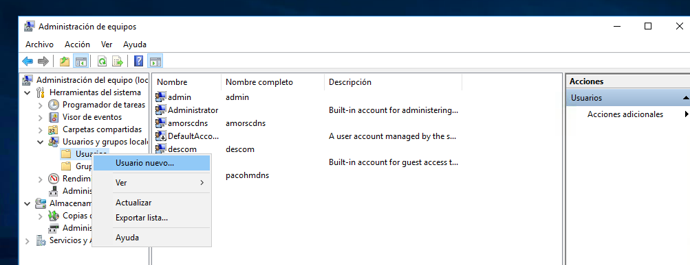
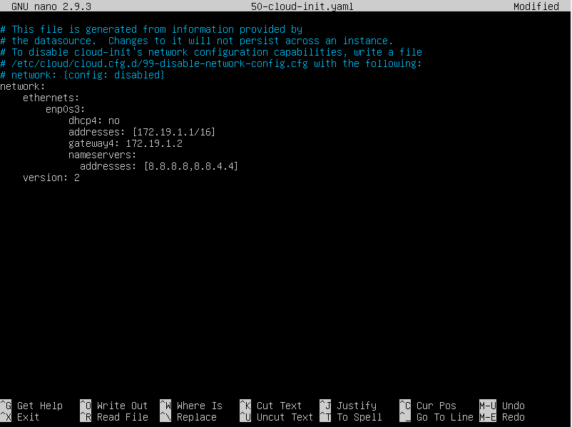
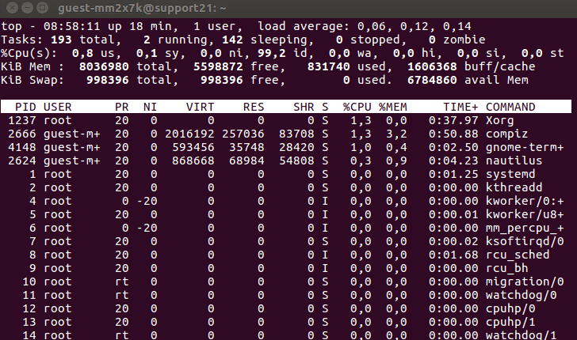

¿Qué he aprendido en este módulo?
En Sistemas en Red he trabajado con sistemas operativos de servidor, como Windows Server y distribuciones Linux, para comprender cómo funcionan las redes empresariales. He configurado servicios de red, gestionado usuarios y compartido recursos entre equipos.
Competencias Desarrolladas
- Instalación y configuración de sistemas operativos de red (Windows Server y Linux).
- Gestión de usuarios, grupos y políticas de seguridad.
- Configuración de servicios de red: DHCP, DNS, FTP y compartición de archivos.
- Administración de recursos compartidos en red.
- Monitorización de eventos y rendimiento del sistema.
- Creación de scripts básicos para automatización en Linux (bash).
Herramientas Utilizadas
Windows Server
Linux Ubuntu / Debian
Oracle VirtualBox
Notepad++ / nano
Ejemplos de mis Trabajos

Creación y administración de usuarios en Windows Server.

Configuración de servicios DHCP y DNS en servidor.

Monitorización de procesos y recursos con comandos Linux.